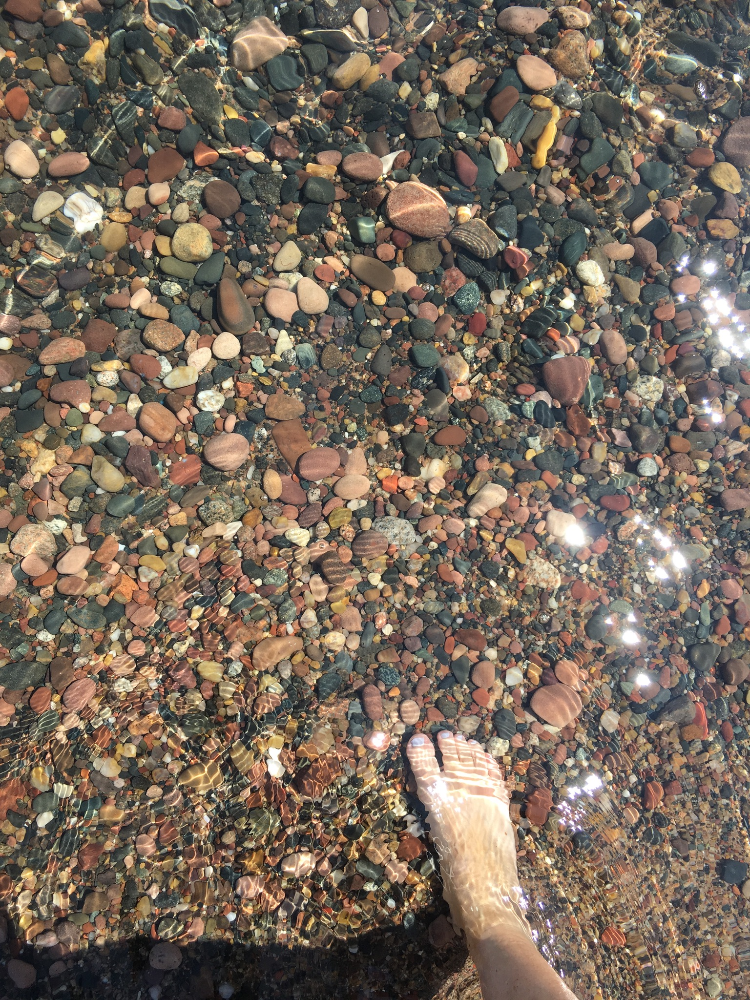

The morning after my mother died, a great horned owl I had never seen before stayed on the porch railing for almost an hour. It looked at me. It did not blink. I cried into a coffee cup until it lifted off.

Rimrock & Otter
A rediscovery of what has always been there — the spirits of the hawk, the river stone, the rain... an antidote to modern disconnection.
Why we exist
The state of the world has left many of us navigating an existence that feels disconnected, empty, and powerless. There's a longing you can't name. You're searching for your spark.
Modern society dimmed the part of us that noticed signs from nature spirits and understood them, separating us from something critical to a purposeful, profound life and a thriving planet.
Spirit guidance — from animals, plants, minerals, elements, landforms, and weather — has been with you all along. It's not about summoning it; it's about strengthening your innate perception of the intersection of science and spirit.
Rimrock & Otter is an invitation — a way back to the enchantment you were born knowing. That kind of homecoming is something you can do for yourself, and it will matter to the planet, everything and everyone sharing it.
Can science and spirit interconnect?
Yes. It’s a connectivity that enables wholeness.
Rimrock & Otter co-founder Kristy Sweetland was a keynote speaker at a recent conference for neuroscientists and neuro-transformational coaches. She wasn't sure how building internal animism would go with a logic-driven crowd of about 75. Animism is the belief that everything in the natural world has a spirit, soul, or consciousness of its own.
During her tutorial on connecting with the spirit of a stone, she looked up to find tears on many of their faces — they described feeling overcome by a sense of "coming home."
One renowned neuroscientist who'd been there remarked during his own keynote: the world needs more of what Kristy brings — the work of empathy and connection.
At our core
Everything in the natural world is relational and reveals wisdom — it's not coincidence, it's synchronicity, meaningful serendipity. An eagle flies overhead just as you're contemplating a big change. Numbers repeat, or things happen in patterns throughout your week — all signs.
It's astrophysics and chemistry. Like the oak, the otter, and the ocean, humankind was forged by stars — nearly every atom in your body is made of the same stuff as nature. We are not superior to any other creature of the Earth. We are family, interconnected and inseparable.
You were born attuned to nature-spirit wisdom. Maybe the logistics of your life have had you on autopilot, but the path back is open to everyone — no special gift, no gatekeepers — you have the inherent ability to reconnect deeply. Enchantment is yours to experience.
An open door
Virtual group sessions, a podcast, a card deck — all still evolving.
If something in you is leaning forward, please leave your name. We'll reach out when we have something ready to share. No noise.
Signs from nature-spirit allies
Throughout your time on earth, there are spirit allies showing up for you. When you are tuned in, it's awe-inspiring — whether you have a powerful “peak experience” or a subtle moment of wonder.
Rimrock & Otter helps you tune in and become your own interpreter of the signs.
The morning after my mother died, a great horned owl I had never seen before stayed on the porch railing for almost an hour. It looked at me. It did not blink. I cried into a coffee cup until it lifted off.
I asked the river what to do about the job. I felt foolish saying it out loud. Then a stick — long, smooth, river-worn — bumped against my shin three times. I took it home. I quit the job two days later. The stick is on my desk.
Same coyote, three nights in a row, at the edge of the yard. Not afraid. Not waiting. Just — present. On the third night I sat down in the grass. We looked at each other for a long time. Something in me settled that has not unsettled since.